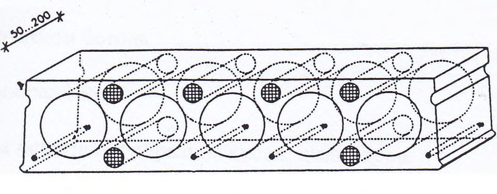

СП 130.13330.2018 «Производство сборных железобетонных констру»
О документе: разработчики, утверждение, регистрация, ключевые слова
СВОД ПРАВИЛ
СП 130.13330.2018
Издание официальное
Москва 2018
1 ИСПОЛНИТЕЛИ - АО «НИЦ «Строительство» - НИИЖБ им. А.А. Гвоздева, ООО «Институт ВНИИжелезобетон», СКТБ МПСМ
2 ВНЕСЕН Техническим комитетом по стандартизации ТК 465 «Строительство»
3 ПОДГОТОВЛЕН к утверждению Департаментом градостроительной деятельности и архитектуры Министерства строительства и жилищнокоммунального хозяйства Российской Федерации (Минстрой России)
- 4 УТВЕРЖДЕН приказом Министерства строительства и жилищнокоммунального хозяйства Российской Федерации от 19 декабря 2018 г. № 827/пр и введен в действие с 20 июня 2019 г.
- 5 ЗАРЕГИСТРИРОВАН Федеральным агентством по техническому регулированию и метрологии (Росстандарт). Пересмотр СП 130.13330.2011
В случае пересмотра (замены) или отмены настоящего свода правил соответствующее уведомление будет опубликовано в установленном порядке. Соответствующая информация, уведомление и тексты размещаются также в информационной системе общего пользования - на официальном сайте разработчика (Минстрой России) в сети Интернет
© Минстрой России, 2018
Настоящий нормативный документ не может быть полностью или частично воспроизведен, тиражирован и распространен в качестве официального издания на территории Российской Федерации без разрешения Минстроя России
- 1 Область применения………………………………………………………..
- 2 Нормативные
ссылки……………………………………………………….
- 3 Термины, определения и сокращения……………………………………..
- 4 Общие требования …………………………………………………………
- 5 Составляющие бетона изделий, их складирование и хранение…………
- 6 Изготовление арматурных и закладных изделий…………………………
- 7 Приготовление
бетона…………..………………………………………….
- 8
- Формование изделий……………………………………………………….
- 9 Тепловая обработка изделий………………………………………………
- 10 Распалубка, доводка, хранение и транспортирование изделий…………
- 11 Контроль качества………………………………………………………….
- 12 Требования безопасности, производства, охрана труда и окружающей среды……………………………………………………………………… …
Приложение А Правила производства сборных железобетонных изделий из тяжелого напрягающего бетона .……………………………. Приложение Б Правила изготовления бетонных и железобетонных
СП 130.13330.2018 безнапорных труб
…………………………………………………………..
Библиография……………………………………………………………
…..
Дата введения - 2019-06-20
УДК 624.012.3/4:691.328.44:625.877(083.13) ОКС 91.080
Ключевые слова: сборный железобетон, изделия, технологии, арматура, бетонные смеси, формование, тепловая обработка, складирование, транспортирование, контроль качества, предварительно-напряженные конструкции.
| Генеральный директор АО «НИЦ «Строительство» | А.В.Кузьмин |
|---|---|
| Руководитель разработки Директор НИИЖБ им.А.А.Гвоздева, д.т.н. | А.Н.Давидюк |
| Исполнители: | |
| Заведующий Лабораторией №4 НИИЖБ им.А.А.Гвоздева, к.т.н. | Б.С.Соколов |
| Ведущий научный сотрудник Лаборатории №4, к.т.н. | С.А.Подмазова |
Введение
Настоящий свод правил разработан с учетом требований федеральных законов от 27 декабря 2002 г. № 184-ФЗ «О техническом регулировании», от 30 декабря 2009 г. № 384-ФЗ «Технический регламент о безопасности зданий и сооружений» и содержит правила производства сборных бетонных и железобетонных изделий и конструкций.
Пересмотр выполнен авторским коллективом: АО «НИЦ «Строительство» НИИЖБ им. А.А. Гвоздева (д-р техн. наук А.Н. Давидюк , канд. техн. наук Р.Ш. Шарипов , канд. техн. наук Б.С. Соколов, канд. техн. наук С.А. Подмазова, канд. техн. наук В.Н. Кузин, канд. техн. наук В.С. Широков, канд. техн. наук Л.А. Титова , канд. техн. наук В.Д. Терин , канд. техн. наук В.В. Дьячков, инж. М.И. Бейлина, С.О. Слышенков, М.В. Глушкова, Д.С. Литвак ); ВНИИжелезобетон (чл.-кор. РААСН, проф. В.А. Рахманов, канд. техн. наук М.Н. Горбовец, В.И.Мелихов, А.А. Сафонов ); СКТБ МПСМ (д-р техн. наук В.Ф. Коровяков , канд. техн. наук Л.Н. Беккер , С.М. Трембицкий ).
СП 130.13330.2018
Производство сборных железобетонных конструкций и изделий Precast concrete production
1Область применения
2Нормативные ссылки
В настоящем своде правил использованы нормативные ссылки на следующие документы:
ГОСТ 12.1.003-2014 Система стандартов безопасности труда. Шум. Общие требования безопасности
ГОСТ 12.1.005-88 Система стандартов безопасности труда. Общие санитарногигиенические требования к воздуху рабочей зоны
ГОСТ 12.1.012-2004 Система стандартов безопасности труда. Вибрационная безопасность. Общие требования
ГОСТ 12.2.003-91 Система стандартов безопасности труда. Оборудование производственное. Общие требования безопасности
ГОСТ 12.3.002-2014 Система стандартов безопасности труда. Процессы производственные. Общие требования безопасности
ГОСТ 12.3.009-76 Система стандартов безопасности труда. Работы погрузочноразгрузочные. Общие требования безопасности
ГОСТ 965-89 Портландцементы белые. Технические условия
ГОСТ 5578 -94 Щебень и песок из шлаков черной и цветной металлургии для бетонов. Технические условия
ГОСТ 6482-2011 Трубы железобетонные безнапорные. Технические условия ГОСТ 6727-80 Проволока из низкоуглеродистой стали холоднотянутая для армирования железобетонных конструкций. Технические условия
ГОСТ 7076-99 Материалы и изделия строительные. Метод определения теплопроводности и термического сопротивления при стационарном тепловом режиме
ГОСТ 7348-81 Проволока из углеродистой стали для армирования предварительно напряженных железобетонных конструкций. Технические условия ГОСТ 7473-2010 Смеси бетонные. Технические условия
ГОСТ 8267-93 Щебень и гравий из плотных горных пород для строительных работ. Технические условия
ГОСТ 8478-81 Сетки сварные для железобетонных конструкций. Технические условия
ГОСТ 8735-88 Песок для строительных работ. Методы испытаний
ГОСТ 8736 -2014 Песок для строительных работ. Технические условия
ГОСТ 8829-94 Изделия строительные железобетонные и бетонные заводского изготовления. Методы испытаний нагружением. Правила оценки прочности, жесткости и трещиностойкости
ГОСТ 9758-2012 Заполнители пористые неорганические для строительных работ. Методы испытаний
ГОСТ 10060-2012 Бетоны. Методы определения морозостойкости
ГОСТ 10178-85 Портландцемент и шлакопортландцемент. Технические условия
ГОСТ 10180-2012 Бетоны. Методы определения прочности по контрольным образцам
ГОСТ 10181-2014 Смеси бетонные. Методы испытаний
ГОСТ 10832-2009 Песок и щебень перлитовые вспученные. Технические условия
ГОСТ 13015-2012 Изделия бетонные и железобетонные для строительства. Общие технические требования. Правила приемки, маркировки, транспортирования и хранения
ГОСТ 14098-2014 Соединения сварные арматуры и закладных изделий железобетонных конструкций. Типы, конструкции и размеры
ГОСТ 15825-80 Портландцемент цветной. Технические условия
ГОСТ 16349-85 Смесители цикличные для строительных материалов. Технические условия
ГОСТ 17624 -2012 Бетоны. Ультразвуковой метод определения прочности
ГОСТ 18105-2010 Бетоны. Правила контроля и оценки прочности
ГОСТ 22000-86 Трубы бетонные и железобетонные. Типы и основные параметры
ГОСТ 22263-76 Щебень и песок из пористых горных пород. Технические условия
ГОСТ 22266-2013 Цементы сульфатостойкие. Технические условия
ГОСТ 22362-77 Конструкции железобетонные. Методы измерения силы натяжения арматуры
ГОСТ 22685-89 Формы для изготовления контрольных образцов бетона. Технические условия
ГОСТ 22690-2015 Бетоны. Определение прочности механическими методами неразрушающего контроля
ГОСТ 22856-89 Щебень и песок декоративные из природного камня. Технические условия
ГОСТ 23117-91 Зажимы полуавтоматические для натяжения арматуры железобетонных конструкций. Технические условия
ГОСТ 23279-2012 Сетки арматурные сварные для железобетонных конструкций и изделий. Общие технические условия
СП 130.13330.2018
| ГОСТ 23732-2011 Вода для бетонов и строительных растворов. Технические |
|---|
| условия |
| ГОСТ 24211-2008 Добавки для бетонов и строительных растворов. Общие |
| технические условия |
| ГОСТ 25192-2012 Бетоны. Классификация и общие технические требования |
| ГОСТ 25592 - 91 Смеси золошлаковые тепловых электростанций для бетонов. |
| Технические условия |
| ГОСТ 25781-83 Формы стальные для изготовления железобетонных изделий. |
| Технические условия |
| ГОСТ 25818-2017 Золы-уноса тепловых электростанций для бетонов. |
| Технические условия |
| ГОСТ 25820-2014 Бетоны легкие. Технические условия |
| ГОСТ 25878-85 Формы стальные для изготовления железобетонных изделий. |
| Поддоны. Конструкция и размеры |
| ГОСТ 25898-2012 Материалы и изделия строительные. Методы определения |
| паропроницаемости и сопротивления паропроницанию |
| ГОСТ 26633-2015 Бетоны тяжелые и мелкозернистые. Технические условия |
| ГОСТ 26644 - 85 Щебень и песок из шлаков тепловых электростанций для |
| бетона. Технические условия |
| ГОСТ 27006 - 86 Бетоны. Правила подбора состава |
| ГОСТ 28570-90 Бетоны. Методы определения прочности по образцам, |
| отобранным из конструкций |
| ГОСТ 30166-2014 Ресурсосбережение. Основные положения |
| ГОСТ 30515-2013 Цементы. Общие технические условия. |
| ГОСТ 31108 - 2016 Цементы общестроительные. Технические условия |
| плотных горных пород при производстве щебня. Технические условия |
ГОСТ 31938-2012 Арматура композитная полимерная для армирования бетонных конструкций. Общие технические условия
ГОСТ 32496-2013 Заполнители пористые для легких бетонов. Технические условия
ГОСТ 32803-2014 Бетоны напрягающие. Технические условия
ГОСТ 34028-2016 Прокат арматурный для железобетонных конструкций.
Технические условия
ГОСТ Р 53228-2008 Весы неавтоматического действия. Часть 1. Метрологические и технические требования. Испытания
ГОСТ Р 53692-2009 Ресурсосбережение. Обращение с отходами. Этапы технологического цикла отходов
ГОСТ Р 53772-2010 Канаты стальные арматурные семипроволочные стабилизированные. Технические условия
ГОСТ Р 55224-2012 Цементы для транспортного строительства. Технические условия
ГОСТ Р 56587-2015 Смеси бетонные. Метод определения сроков схватывания ГОСТ Р 56588-2015 Цементы. Метод определения ложного схватывания
ГОСТ Р 56592-2015 Добавки минеральные для бетонов и строительных растворов. Общие технические условия
ГОСТ Р 56727-2015 Цементы напрягающие. Технические условия
ГОСТ Р 57997-2017 Арматурные и закладные изделия сварные, соединения сварные арматурные и закладных изделий железобетонных конструкций. Общие технические условия
СП 28.13330.2017 «СНиП 2.03.11-85 Защита строительных конструкций от коррозии»
СП 51.13330.2011 «СНиП 23-03-2003 Защита от шума» (с изменением № 1)
СП 52.13330.2016 «СНиП 23-05-95* Естественное и искусственное освещение»
СП 63.13330.2012 «СНиП 52-01-2003 Бетонные и железобетонные конструкции. Основные положения» (с изменениями № 1, № 2, № 3)
СП 70.13330.2012 «СНиП 3.03.01-87 Несущие и ограждающие конструкции» (с
изменениями № 1, № 3)
Примечание - При пользовании настоящим сводом правил целесообразно проверить действие ссылочных документов в информационной системе общего пользования -на официальном сайте федерального органа исполнительной власти в сфере стандартизации в сети Интернет или по ежегодному информационному указателю «Национальные стандарты», который опубликован по состоянию на 1 января текущего года, и по выпускам ежемесячного информационного указателя «Национальные стандарты» за текущий год. Если заменен ссылочный документ, на который дана недатированная ссылка, то рекомендуется использовать действующую версию этого документа с учетом всех внесенных в данную версию изменений. Если заменен ссылочный документ, на который дана датированная ссылка, то рекомендуется использовать версию этого документа с указанным выше годом утверждения (принятия). Если после утверждения настоящего свода правил в ссылочный документ, на который дана датированная ссылка, внесено изменение, затрагивающее положение, на которое дана ссылка, то это положение рекомендуется применять без учета данного изменения. Если ссылочный документ отменен без замены, то положение, в котором дана ссылка на него, рекомендуется применять в части, не затрагивающей эту ссылку. Сведения о действии сводов правил целесообразно проверить в Федеральном информационном фонде стандартов.
3Термины, определения и сокращения
В настоящем своде правил применены следующие термины с соответствующими определениями:
- 3.1.1 агрегатно-поточная технология
- Изготовление изделий на технологических линиях, операции на которых осуществляются последовательно в формах на стационарных постах.
- 3.1.2 бортовая оснастка (бортоснастка)
- Совокупность формообразующих элементов, предназначенных для образования поверхностей изделия вне плоскости поддона.Источник: ГОСТ 25781 -83, приложение 1
- 3.1.3 бункеры-накопители
- Емкости на транспортных средствах для раздачи бетонной смеси.
- 3.1.4 вибропрессование
- Формование изделий с применением вибрации в сочетании со статическим давлением.
- 3.1.5 закладные изделия
- Металлические изделия, используемые для транспортирования, соединения сборных элементов между собой или присоединения к ним элементов электрики и др.
- 3.1.6 локальные смесители
- Отдельно смонтированные смесители вблизи формовочных постов, не входящие в централизованную схему управления.
- 3.1.7 кассетные установки
- Многоместные формы для формования изделий в вертикальном положении.
- 3.1.8 кассетная технология
- Разновидность стендовой технологии, в которой предусматривается комплексное выполнение технологических операций армирования, формования и тепловой обработки изделий в кассетах.
- 3.1.9 конвейерная технология
- Изготовление изделий на поддонвагонетках, перемещаемых транспортными устройствами в цикличном или непрерывном режиме, с последовательным выполнением операций формования и тепловой обработки в туннельных камерах.
- 3.1.10поддон
- Элемент формы, предназначенный для образования в процессе формования нижней поверхности изделия.Источник: ГОСТ 25781-83, приложение 1
- 3.1.11 полуконвейрная технология
- Изготовление изделий при сочетании поточно-агрегатной и конвейерной технологий, в которых используются ямные камеры для тепловой обработки с подачей (и выемкой) поддон-вагонеток в них грузоподъемными устройствами.
- 3.1.12 стенды
- Формовочные площадки, оборудованные механизмами для формования изделий на месте.
- 3.1.13 стендовая технология
- Изготовление изделий на технологической линии, на которой все операции по производству изделий выполняются стационарно, т.е. без их перемещения.
- 3.1.14 технологическая линия изготовления изделий
- Объединенный комплекс технологических операций изготовления изделий (за исключением полуфабрикатов - бетонной смеси, арматуры и других комплектующих).
- 3.1.15 распалубочная прочность
- Прочность бетона на сжатие, устанавливаемая технологическими правилами производства предприятияизготовителя для каждого вида изделий, при которой обеспечивается распалубка (выемка из форм) и безопасное внутрицеховое (внутризаводское) транспортирование изделий без повреждений.
- 3.1.16 передаточная прочность бетона
- Нормируемая прочность бетона предварительно напряженных конструкций к моменту передачи на него усилия обжатия (предварительного напряжения) арматуры.
- 3.1.17 отпускная прочность
- Нормируемая прочность бетона, отвечающая его классу по прочности на сжатие, установленному при проектировании, на момент отпуска (передачи) сборных конструкций потребителю.
- 3.1.18 проектная прочность
- Нормируемая прочность бетона, установленная проектом, при достижении которой конструкция может нести регламентируемую проектом нагрузку . В настоящем своде правил применены следующие сокращения: БСУ -бетонно-смесительная установка; ЛЭП -линия электропередачи; НЦ -напрягающий цемент.
4Общие требования
Требования настоящих сводов правил следует учитывать при проектировании новых и техническом перевооружении действующих заводов сборного железобетона.
СП 130.13330.2018 вержденных в установленном порядке технологических карт на изготовление изделий, оснастку, инструмент, типовые технологические процессы, а также требования другой технологической документации, составленной применительно к условиям конкретного производства и виду изделий.
Производство изделий, регламентируемое настоящим сводом правил, должно включать следующие технологические процессы: складирование и хранение составляющих бетона; изготовление (либо комплектацию, доставленную централизованно) арматурных и закладных изделий; приготовление бетона; формование изделий; тепловая обработка изделий; распалубка, доводка, хранение и транспортирование изделий.
При соответствующем технико-экономическом обосновании допускается изготавливать изделия без тепловой обработки с применением быстротвердеющих цементов, эффективных ускорителей твердения, теплоизолированных форм и стендов и т.п.
5Составляющие бетона изделий, их складирование и хранение
Цементы, крупный и мелкий заполнители и добавки должны соответствовать требованиям стандартов и технических условий на эти материалы.
5.1Цементы
Для производства бетонных и железобетонных изделий следует применять цементы различных видов и классов (марок), соответствующие требованиям ГОСТ 10178, ГОСТ 31108, ГОСТ Р 55224, ГОСТ 22266.
Вид и класс (марку) цемента следует выбирать в соответствии с проектными требованиями на бетон изделий по прочности и по другим показателям качества.
При эксплуатации изделий в условиях агрессивного воздействия окружающей среды, вид цемента следует принимать по СП 28.13330.
Вид и класс (марку) цемента по эффективности пропаривания принимают в соответствии с приложением А ГОСТ 10178 - 85.
Для бетонов, подвергаемых тепловой обработке, рекомендуется применять цементы I и II групп эффективности при пропаривании.
Для приготовления отделочных бетонов следует применять портландцемент по ГОСТ 10178 или ГОСТ 31108, цветные цементы - по ГОСТ 15825, белый цемент - по ГОСТ 965.
5.2Заполнители
В качестве мелких и крупных заполнителей следует применять песок, щебень из природного камня, гравий и щебень из гравия, удовлетворяющие требованиям ГОСТ 8736, ГОСТ 8267, ГОСТ 26633.
Для легких бетонов крупные и мелкие пористые заполнители должны соответствовать требованиям ГОСТ 32496, ГОСТ 10832, ГОСТ 22263, ГОСТ 25592 и ГОСТ 26644.
Показатели качества пористых неорганических крупных и мелких (природных и искусственных) заполнителей определяют по ГОСТ 9758, мелких плотных неорганических заполнителей - по ГОСТ 8735, теплопроводность - по ГОСТ 7076.
СП 130.13330.2018
ГОСТ 5578, а также пористые заполнители других видов, на которые имеются стандарты и технические условия. Зерновой состав пористых песков должен соответствовать требованиям ГОСТ 32496.
Крупный заполнитель при приготовлении бетонной смеси следует применять в виде раздельно дозируемых фракций. Допускается применение крупного заполнителя в виде смеси двух смежных фракций, соответствующих требованиям ГОСТ 26633.
В заполнителях определяют вид вредных компонентов и примесей, а также допустимое их содержание и характер возможного воздействия на бетон по ГОСТ 8267 и ГОСТ 8736.
Крупный пористый заполнитель следует применять в виде раздельно дозируемых фракций 5-10, 10-20 и 20-40 мм. Допускается применение крупного пористого заполнителя в виде смесей фракций 5-20 и 10-40 мм.
5.3Добавки
Для регулирования свойств бетонной смеси и бетона следует применять химические добавки, удовлетворяющие требованиям ГОСТ 24211 и технических условий на каждый вид добавок, разработанных производителем.
Добавки рекомендуется вводить в бетоны:
- для получения бетонных смесей требуемых технологических свойств;
- для получения проектных требований по прочности, водонепроницаемости и морозостойкости.
Добавки для бетонов можно условно разделить на три вида:
- химические;
- минеральные;
- органо-минеральные.
Химические, минеральные и органо-минеральные добавки должны соответствовать требованиям ГОСТ 24211, ГОСТ Р 56592, ГОСТ 25818, ГОСТ 25592 и технических условий, по которым они выпускаются.
Эффективность действия добавок зависит от их химического, минералогического и дисперсного состава, активности, механизма действия, технологии производства бетонных смесей, условий тепловой обработки и особенностей выпускаемых изделий.
5.4Вода
Вода для затворения бетонной смеси и приготовления растворов химических добавок должна соответствовать требованиям ГОСТ 23732.
5.5Арматура
СП 130.13330.2018 соответствующих марок, товарные арматурные сетки, каркасы, закладные и другие арматурные изделия, а также применяемая для армирования бетона стальная фибра должны удовлетворять требованиям проектной документации, ГОСТ 34028, ГОСТ 6727, ГОСТ 7348, ГОСТ Р 53772, ГОСТ 8478, ГОСТ 23279, ГОСТ 14098, ГОСТ Р 57997 и других действующих нормативных документов.
5.6Складирование и хранение
6Изготовление арматурных и закладных изделий
СП 130.13330.2018 каркасов, сборка и сварка объемных каркасов и т.п.), с необходимым внутрицеховым и подъемно -транспортным оборудованием.
СП 130.13330.2018 допускается изготавливать петли на станках для гибки арматурных стержней.
Допускается при соответствующем обосновании применять подъемные системы быстрого расцепления.
Резка проволоки и канатов электрической дугой не допускается.
Испытание опрессованных шайб, спиралей и навинчиваемых гаек производится на выдергивание стержней из анкеров, закрепленных также в зажиме разрывной машины.
СП 130.13330.2018 навивки каркаса с помощью контактной сварки. Сборка арматурных каркасов с помощью дуговой сварки и вязки допускается только в случаях, указанных в проектной документации или рабочих чертежах.
Объемные каркасы должны иметь жесткость, достаточную для складирования, транспортирования, соблюдения проектного положения в форме и соответствовать требованиям ГОСТ Р 57997.
Для нанесения антикоррозионного покрытия (как правило, цинкового) на закладные и прочие арматурные элементы необходимо предусматривать в арматурных цехах закрытые участки дробеструйной обработки арматурных элементов и закрытые камеры или установки нанесения антикоррозионного покрытия.
В состав комплекса следует включать: машины для обработки стального прутка с катушки (правки, резки); машины для сварки, гибки и укладки сеток в штабель; машины для изготовления каркасов и скоб; подъемно-транспортные устройства и склад готовых сеток. С помощью программного обеспечения распределяют операции по выдаче сеток в цех и на поддоны постов армирования формовочных линий.
7Приготовление бетона
7.1Общие требования
Подбор составов бетона должен выполняться лабораторией предприятияизготовителя бетона или иными аттестованными лабораториями и научноисследовательскими институтами (центрами) по заданию, разработанному этим предприятием или заказчиком.
7.2Подача, дозирование материалов и приготовление смесей
Дозирование материалов при приготовлении легкого бетона должно производиться объемно -весовым способом с корректировкой состава смеси на основе контроля насыпной плотности крупного пористого заполнителя в объемновесовом дозаторе.
СП 130.13330.2018
Для обеспечения требуемой минимальной температуры смеси в зимнее время следует подогревать заполнители до температуры 20°С -25°С.
Поданная к месту укладки бетонная смесь должна иметь:
- требуемую удобоукладываемость с отклонениями подвижности не более 2 см и жесткости не более 3 с;
- среднюю плотность в уплотненном состоянии, не превышающую требуемую более чем на 150 кг/м³ (для легких бетонов);
- температуру в пределах от +13°С до +30°С, если принятой технологией не предусмотрена более высокая температура смесей;
- требуемый объем вовлеченного воздуха (для смесей с воздухововлекающими добавками).
8Формование изделий
8.1Общие требования
При формовании многослойных панелей наружных стен, объемных элементов санитарно-технических кабин, лифтовых шахт, вентиляционных блоков и других изделий, имеющих специфические особенности формовочного процесса, необходимо соблюдать требования действующей нормативно-технической документации.
- панели наружных стен, плиты перекрытий, лестничные площадки, архитектурные детали и плоские доборные изделия - на конвейерных или агрегатнопоточных линиях в горизонтальном положении, а также на поворотных столах. При этом плоские и объемные доборные и архитектурные изделия можно изготавливать на самоходных виброформующих машинах;
- панели внутренних стен и лестничные марши - в кассетных установках или на кассетно-конвейерных линиях в вертикальном положении, а также на агрегатнопоточных или конвейерных линиях в горизонтальном положении;
- фундаментные балки, ригели, балки, колонны, шпалы (в групповых формах), дорожные и аэродромные плиты и другие линейные конструкции длиной до 12 м на агрегатно-поточных, полуконвейерных и конвейерных линиях;
- объемные элементы, санитарно-технические кабины, блоки лифтовых шахт (с вентиляционными блоками и мусоропроводом) и т.п. - в специальных установках на стендах, конвейерных линиях, карусельных установках;
СП 130.13330.2018
- трубы и опоры ЛЭП - на специализированных агрегатно-поточных и стендовых линиях;
- линейные конструкции длиной свыше 12 м (колонны, балки, сваи, фермы различных типов, пространственные тонкостенные элементы, плиты типа КЖС, П, 2Т, Т, мостовые конструкции - на стендовых линиях;
- предварительно напряженные конструкции, многопустотные плиты, изготовленные методом безопалубочного формования - на линейных стендах длиной 70 - 200 м.
Примечание - Правила изготовления бетонных и железобетонных безнапорных труб указаны в приложении Б.
Качественные характеристики бетона изделий должны отвечать требованиям, указанным в соответствующих стандартах на эти изделия.
Продолжительность технологических операций и регламентированные перерывы должны соответствовать действующим нормативам времени. При этом ритмы, используемые при расчете производительности, не должны превышать максимальных ритмов.
Продолжительность технологических операций и регламентированные перерывы должны соответствовать действующим нормативам времени.
8.2Формы, стенды и подготовка их к формованию
Формы классифицируются по следующим основным признакам:
- способу производства изделий;
- технологическим факторам;
- конструктивным решениям.
По способу производства изделий формы подразделяются в зависимости от вида технологии:
- конвейерной;
- полуконвейерной;
- поточно-агрегатной;
- стендовой;
- кассетной.
По основным технологическим факторам формы подразделяются в зависимости от:
- способа перемещения (краном, по рельсовым путям, по рольгангу, комбинированным способом и др.);
- способа тепловой обработки (в камере, через паровые полости или регистры и др.);
- характера армирования изделий (ненапряженной арматурой, предварительно напряженной арматурой с натяжением на упоры стенда (несиловые), предварительно напряженной арматурой с натяжением на упоры формы (силовые));
- способа уплотнения бетонной смеси на строительной площадке (вибрационный, ударно-вибрационный или ударный, поверхностным виброустройством, наружными или глубинными вибраторами, ваккумирования, виброгидропрессования, безвибрационный).
При формовании малосерийных изделий могут применяться неметаллические формы (стеклопластиковые, ламинированные, железобетонные и др.).
СП 130.13330.2018
8.3Предварительное натяжение арматуры
При концентрированном расположении арматуры по сечению изделия рекомендуется применять групповое натяжение арматуры.
СП 130.13330.2018
- по показаниям манометра гидродомкрата;
- показаниям динамометра, включенного в силовую цепь гидродомкрата и напрягаемой арматуры.
- величиной перемещения натяжного устройства (захвата, траверсы);
- длиной арматурных заготовок при фиксированном (нерегулируемом) ходе натяжного устройства.
Механическое натяжение напрягаемой арматуры на формы следует осуществлять одновременно для всей напрягаемой арматуры изделий гидравлическими домкратами.
При этом должен быть осуществлен контроль предельной температуры нагрева арматуры, установленной проектной документацией для соответствующих марок сталей. Удлинение заготовок при электронагреве должно обеспечивать свободную укладку их в нагретом состоянии в упоры.
Не допускается одновременный нагрев нескольких стержней разного диаметра при последовательной схеме их включения.
Температура нагрева должна контролироваться по удлинению стали. Контроль теплового удлинения должен осуществляться с погрешностью не более ± 1 мм.
Допускается также использовать для контроля температуры термопары, термокарандаши и другие приборы, обеспечивающие измерение температуры с максимальной ошибкой не более +20 о С и не препятствующие осуществлению технологических операций по нагреву и натяжению арматуры.
Таблица 1 Рекомендуемые и максимально допустимые значения температуры и время электронагрева арматуры
| Класс арматуры | Температура электронагрева, о С | Температура электронагрева, о С | Рекомендуемое время |
|---|---|---|---|
| рекомендуемая | максимально допустимая | нагрева, мин | |
| А600 и А800 | 400 | 500 | 0,5-5,0 |
| А1000 и А1200 | 450 | 500 | 0,5-5,0 |
8.4Укладка и уплотнение бетонных смесей
При виброштамповании и вибропрессовании необходимо обеспечивать дозированную укладку бетонной смеси в зависимости от усилия уплотнения и объема формуемых изделий.
При формовании изделий на стендах или в силовых формах уплотнять бетонную смесь рекомендуется с помощью навесных вибраторов, вибровалов или вибропоршня. Допускается применение глубинных вибраторов.
Применение других методов формования возможно после производственной проверки и определения однородности по плотности и прочности бетона изделия.
Применительно к конкретным условиям производства (габаритным размерам изделий, их конфигурации, густоты армирования и т.п.) необходимо установить параметры рабочего оборудования и соответствующие им значения
СП 130.13330.2018 удобоукладываемости бетонной смеси, утвержденные в технологической карте.
СП 130.13330.2018
Таблица 2 Способы формования и удобоукладываемость бетонной смеси изделий
| Диапазон удобоукладываемости бетонной смеси (подвижность, см/ жесткость, с) при формовании | Диапазон удобоукладываемости бетонной смеси (подвижность, см/ жесткость, с) при формовании | Диапазон удобоукладываемости бетонной смеси (подвижность, см/ жесткость, с) при формовании | Диапазон удобоукладываемости бетонной смеси (подвижность, см/ жесткость, с) при формовании | Диапазон удобоукладываемости бетонной смеси (подвижность, см/ жесткость, с) при формовании | Диапазон удобоукладываемости бетонной смеси (подвижность, см/ жесткость, с) при формовании | Диапазон удобоукладываемости бетонной смеси (подвижность, см/ жесткость, с) при формовании | Диапазон удобоукладываемости бетонной смеси (подвижность, см/ жесткость, с) при формовании | Диапазон удобоукладываемости бетонной смеси (подвижность, см/ жесткость, с) при формовании | Диапазон удобоукладываемости бетонной смеси (подвижность, см/ жесткость, с) при формовании | Диапазон удобоукладываемости бетонной смеси (подвижность, см/ жесткость, с) при формовании | Диапазон удобоукладываемости бетонной смеси (подвижность, см/ жесткость, с) при формовании | Диапазон удобоукладываемости бетонной смеси (подвижность, см/ жесткость, с) при формовании | |
|---|---|---|---|---|---|---|---|---|---|---|---|---|---|
| станковом | станковом | станковом | поверхностном | поверхностном | наружном | наружном | внутреннем | ||||||
| Конструкции и изделия | на виброплощадках и виброустановках с частотой 50 Гц | на виброплощадках с частотой 25 Гц | на ударно-вибра- ционных площадках | на ударных площадках | вибронасадками, вибропротяжными устройствами | вибропрессами | роликовыми установками | поверхностны- ми вибраторами | в кассетных и объемно-формующих установках | в виброформах | глубинными вибраторами | вибровкладышами | |
| 1 Конструкции плоскостные: плиты перекрытий, панели внутренних стен | 1 4 - - | 5 9 - - | 1 4 - - | 1 4 - - | 1 4 - - | - | св.31 - | 5 9 - - | - - 25 10 | - | - | - | |
| аэродромные, дорожные плиты, элементы подпорных стенок | 10 5 - - | - | - | - | - | - | - | 1 4 - - | - - 3 1 | - | 1 4 - - | - | |
| панели наружных стен однослойные, сплошные или с оконными и дверными проемами | 10 5 - - | - | 10 5 - - | - | 1 4 - - | - | - | - | - | - | - | - | |
| плиты ребристые и кессонные, панели и другие аналогичные элементы с ребрами глубиной не более 25 см, пролетом не более 12 м (плиты перекрытий, балконные плиты и др.) | 1 4 - - | 5 9 - - | 1 4 - - | 1 4 - - | - | - | - | - - 15 10 | - | - | - | - | |
| то же, с ребрами глубиной свыше 25 см, пролетом до 12 м | 1 4 - - | - - 15 10 | 1 4 - - | - | - | - | - | - - 15 10 | - | - | - - 15 10 | - | |
| то же, пролетом свыше 12 м | - | - | - | - | 1 4 - - | - | - | - - 15 10 | - | 1 4 - - | - - 15 10 | - | |
| плиты пустотелые (перекрытия, блоки вентиляционные) | 20 11 - - | - | - | - | - | - | - | - | - - 3 1 | - | - | 20 11 - - | |
| плиты тротуарные | плиты тротуарные | - - | - | - | - | св.31 - св.31 - | - | - | - | - | - |
Продолжение таблицы 2
| Диапазон удобоукладываемости бетонной смеси (подвижность, см/ жесткость, с) при формовании | Диапазон удобоукладываемости бетонной смеси (подвижность, см/ жесткость, с) при формовании | Диапазон удобоукладываемости бетонной смеси (подвижность, см/ жесткость, с) при формовании | Диапазон удобоукладываемости бетонной смеси (подвижность, см/ жесткость, с) при формовании | Диапазон удобоукладываемости бетонной смеси (подвижность, см/ жесткость, с) при формовании | Диапазон удобоукладываемости бетонной смеси (подвижность, см/ жесткость, с) при формовании | Диапазон удобоукладываемости бетонной смеси (подвижность, см/ жесткость, с) при формовании | Диапазон удобоукладываемости бетонной смеси (подвижность, см/ жесткость, с) при формовании | Диапазон удобоукладываемости бетонной смеси (подвижность, см/ жесткость, с) при формовании | Диапазон удобоукладываемости бетонной смеси (подвижность, см/ жесткость, с) при формовании | Диапазон удобоукладываемости бетонной смеси (подвижность, см/ жесткость, с) при формовании | Диапазон удобоукладываемости бетонной смеси (подвижность, см/ жесткость, с) при формовании | |
|---|---|---|---|---|---|---|---|---|---|---|---|---|
| станковом | станковом | станковом | поверхностном | поверхностном | поверхностном | поверхностном | наружном | наружном | внутреннем | |||
| Конструкции и изделия | на виброплощадках и виброустановках с частотой 50 Гц | на виброплощадках с частотой 25 Гц | на ударно-вибрацион- ных площадках | на ударных площадках | вибронасадками, вибропротяжными устройствами | вибропрессами | роликовыми установками | поверхностными вибраторами | в кассетах и объемно- формующих установках | в виброформах | глубинными вибраторами | вибровкадышами |
| 2 Конструкции линейные: простого профиля (сваи, ригели, перемычки, колонны, стойки) | 10 5 - - | 1 4 - - | 10 5 - - | - | - | - | - | - | - | - | 1 4 - - | - |
| сложного профиля (балки тавровые и двутавровые, фермы, колонны двухветвевые, опоры ЛЭП, мачты) при высоте бетонирования менее 80 см | 1 4 - - | 5 9 - - | 1 4 - - | - | - | - | - | - | - | - | 5 9 - - | - |
| то же, при высоте бетонирования свыше 80 см | 5 9 - - | - - 15 10 | 5 9 - - | - | - | - | - | - | - | 5 9 - - | - - 15 10 | - |
| камень бортовой | - | - | - | - | - | св.31 - | св.31 - | - | - | - | - | - |
| шпалы | 30 21 - - | - | - | - | - | - | - | - | - | - | - | - |
| конструкции со значительным общим или местным насыщением арматурой | 5 9 - - | - | - | - | 5 9 - - | - | - | - | - | 5 9 - - | 5 9 - - | - |
СП 130.13330.2018
Окончание таблицы 2
| Диапазон удобоукладываемости бетонной смеси (подвижность, см/ жесткость, с) при формовании | Диапазон удобоукладываемости бетонной смеси (подвижность, см/ жесткость, с) при формовании | Диапазон удобоукладываемости бетонной смеси (подвижность, см/ жесткость, с) при формовании | Диапазон удобоукладываемости бетонной смеси (подвижность, см/ жесткость, с) при формовании | Диапазон удобоукладываемости бетонной смеси (подвижность, см/ жесткость, с) при формовании | Диапазон удобоукладываемости бетонной смеси (подвижность, см/ жесткость, с) при формовании | Диапазон удобоукладываемости бетонной смеси (подвижность, см/ жесткость, с) при формовании | Диапазон удобоукладываемости бетонной смеси (подвижность, см/ жесткость, с) при формовании | Диапазон удобоукладываемости бетонной смеси (подвижность, см/ жесткость, с) при формовании | Диапазон удобоукладываемости бетонной смеси (подвижность, см/ жесткость, с) при формовании | Диапазон удобоукладываемости бетонной смеси (подвижность, см/ жесткость, с) при формовании | Диапазон удобоукладываемости бетонной смеси (подвижность, см/ жесткость, с) при формовании | |
|---|---|---|---|---|---|---|---|---|---|---|---|---|
| станковом | станковом | станковом | станковом | поверхностном | поверхностном | поверхностном | наружном | наружном | внутреннем | внутреннем | внутреннем | |
| на виброплощадках и виброустановках | частотой 50 Гц на виброплощадках с частотой 25 Гц | на ударно-вибра- | ционных площадках на ударных площадках | вибронасадками, вибропротяжными | устройствами вибропрессами | роликовыми установками | поверхностными вибраторами | в кассетных и объемно- формующих установках | в виброформах | глубинными вибраторами | вибровкладышами | |
| 3 Конструкции пространственные, тонкостенные: панели-оболочки | - | - | - | - | 1 4 - - | - | - | 5 9 - - | - | 5 9 - - | - - 15 10 | - |
| скорлупы цилиндрические резервуаров, силосов, колодцев, шахтных стволов и панелей сводов-оболочек | 5 9 - - | - | - | - | - | - | - | - | - | 5 9 - - | - | - |
| элементы объемные (санитарно-технические кабины, шахты лифтов) | - | - | - | - | - | - | - | - | - - 15 10 | - - 15 10 | - | - |
| блоки фундаментные, стеновые и другие подобные изделия простой конфигурации | 10 5 - - | - | - | 10 5 - - | 10 5 - - | - | - | - | - - 3 1 | - | - | - |
- 3 Роликовое формование следует применять только для конструкций, не имеющих пространственного арматурного каркаса.
4 При изготовлении ребристых плит и панелей-оболочек с ребрами глубиной свыше 25 см вибропротяжную технологию следует использовать только для изготовления верхней тонкостенной части изделий.
5 Применять бетонную смесь подвижностью 10 - 15 см и выше без водоредуцирующих/пластифицирующих добавок в кассетных установках не допускается.
8.5Отделка в процессе формования
Качество поверхности готовых изделий должно соответствовать требованиям ГОСТ 13015 на изделия конкретных видов.
- смазки (разделительные жидкости) на основе минеральных и синтетических масел;
- эмульсионную смазку на основе восковых компонентов в сочетании с подвижными бетонными смесями;
- укладку на поддоны специальных паст;
- стеклопластиковые или железобетонные поддоны с полимерным покрытием при применении ударных или других режимов уплотнения бетонных смесей; - высокочастотные режимы уплотнения.
СП 130.13330.2018
СП 130.13330.2018 керамической или стеклянной плиткой, декоративным рельефом, химическим вскрытием, механической обработкой) следует производить в соответствии с архитектурно-техническими требованиями к изделиям, установленными стандартами, проектной документацией и технологическими приемами формования (лицом вверх или вниз). Параметры и технологический регламент при выполнении отделки фасадных поверхностей различными способами должны соответствовать нормативно-технической документации.
Таблица 3 Основные параметры рабочих органов заглаживающих машин
| Рабочий орган | Назначение | Определяющий размер рабочего органа, мм | Скорость | Скорость | Скорость | Удельное давление на обрабатываемую поверхность | Марка по удобоукла- дывемости бетонной смеси* |
|---|---|---|---|---|---|---|---|
| Рабочий орган | Назначение | Определяющий размер рабочего органа, мм | продольного движения, м/мин | поперечного движения, | м/мин движения рабочего органа | Удельное давление на обрабатываемую поверхность | Марка по удобоукла- дывемости бетонной смеси* |
| Брус с возвратно- поступательым движе- нием | Калибрование, предварительное заглаживание | Ширина 150 - 300 | 0,6 - 1,5 | - | 60-180 ходов/мин при смещении за один ход на 60 - 150 мм | 0,3 - 0,5 кПа (30 - 50 кгс/м² ) | Ж1 (5-10 с), П3, П4 |
| Валок | Калибрование, предварительное и окончательное заглаживание | Диаметр 140 - 250 | 1 - 3,5 | - | 5 - 6 м/с | 1 - 2 кН/м (100 - 200 кгс/м) | Ж1 (5-10 с), П1 |
| Диск | Окончательное заглаживание | Диаметр 800 - 1000 | 5 - 8 | 4 - 6 | 9 - 15 м/с | 0,4-1,2 кПа (40-120 кгс/м) | Ж1 (5-10 с), П1 |
8.6Немедленная или ускоренная распалубка, безопалубочное формование
СП 130.13330.2018 безопалубочное формование (в непрерывных процессах) с соблюдением всех установленных требований к геометрической точности и другим характеристикам готовых изделий.
- многоступенчатое непрерывное формование изделий из жестких бетонных смесей;
- осуществление вибрационного воздействия на бетонную смесь рабочими органами путем контакта только со смесью (поверхностное послойное уплотнение);
- непрерывное перемещение уплотняющих органов машины относительно укладываемой бетонной смеси.
9Тепловая обработка изделий
9.1Общие требования
Если значения передаточной и отпускной прочности бетона каждого вида изделия не соответствуют требуемой величине, указанной в технологической карте, то следует откорректировать номинальный состав бетона для получения заданных значений передаточной и отпускной прочности бетона изделий.
СП 130.13330.2018
СП 130.13330.2018 обработку применительно к конкретным условиям и технологическим линиям. Для предварительно напряженных конструкций, изготавливаемых в силовых формах, двухстадийная тепловая обработка допускается при специальном обосновании.
9.2Тепловые агрегаты
СП 130.13330.2018 расходованию тепловой энергии и устранению ее потерь: теплоизоляцию ограждений камер, элементов термоформ и кассетных установок; выполнение ограждающих конструкций камер из легкого бетона; гидрозащиту теплоизоляционного слоя в ямных камерах, термоформах, кассетах, стендах; надежное уплотнение торцевых проемов в туннельных камерах и т.п.
9.3Режимы тепловой обработки
СП 130.13330.2018 заданном режиме тепловой обработки требуемую прочность.
Максимальная температура в камере в период изотермического прогрева изделий из тяжелого, мелкозернистого и легкого конструкционного бетонов, изготовленного без химических добавок, не должна превышать 80 °С. При тепловой обработке изделий из конструкционно-теплоизоляционного легкого бетона температуру среды в период изотермического прогрева следует повышать до 90 °С. При тепловой обработке изделий из тяжелого напрягающего бетона максимальная температура среды должна быть не более 60 °С -70 °С при использовании цемента НЦ-10 и не более 50 °С при использовании цементов НЦ -20 и НЦ -40.
При приготовлении бетона изделий с водоредуцирующими/ пластифицирующими добавками температура изотермического прогрева должна быть не более 60 о С.
Таблица 4 Длительность предварительного выдерживания и скорость
подъема температуры
| Вид бетона | Способ тепловой обработки | Предвари- тельное вы- держива- ние, ч, не менее | Начальная прочность бетона, МПа (кгс/см² ) | Скорость подъема тем- пературы среды, °С/ч, не более |
|---|---|---|---|---|
| Тяжелый и легкий конструкционный | Пропаривание в камерах | 1 | До 0,1 (1) 0,1-0,2 (1-2) 0,2-0,4 (2-4) 0,4-05 (4-5) Св. 0,5 (5) | 15 25 35 45 50 |
| Тяжелый для предварительно напря- женных изделий, изготавливаемых: на стендах (без применения уст- ройств для регулирования натяжения арматуры при тепловой обработке) в силовых формах | Пропаривание в камерах То же | 1 Не более 1 | 0,2 (2) и более До 0,2 (2) | 20 30 |
| Легкий конструкционно-теплоизоляци- онный | Сухой прогрев в камерах Пропаривание в термоформах Пропаривание в камерах | 1 2 3 | - - - | 50 40 30 |
При использовании продуктов сгорания природного газа период подъема температуры следует проводить в среде с относительной влажностью 20 % -60 % с последующим доувлажнением до 80 % на стадии изотермического прогрева. При относительной влажности среды менее 80 % необходимо предусматривать мероприятия для защиты бетона от испарения влаги. При тепловой обработке изделий из конструкционно-теплоизоляционного легкого бетона относительную
СП 130.13330.2018 влажность среды следует поддерживать в пределах 20% -60 %.
СП 130.13330.2018
10Распалубка, доводка, хранение и транспортирование изделий
- одновременный для всех арматурных элементов или группы с помощью домкратов, специальных устройств, предварительного нагрева или путем обрезки арматуры (газовым пламенем, электродугой и т.д.);
- поочередный для отдельных арматурных элементов или групп.
СП 130.13330.2018 осуществлять не одновременно: на полную величину в каждом арматурном элементе (или группах) или ступенями, постепенно уменьшая напряжения.
Доводочные работы должны соответствовать требованиям утвержденной технологической карты и другой технической документации.
- при выборе автотранспортных средств, кроме обеспечивающих большую грузоподъемность, предпочтение должно быть отдано тем, которые обеспечивают сохранность сборных железобетонных изделий в конкретных дорожных условиях;
- схемы опирания, закрепления и режима перевозки (скорость, дальность и др.) с учетом конкретных дорожных условий перед началом массовых перевозок должны быть опробованы с обязательным осмотром изделий до и после перевозки;
- при разработке конкретных схем опирания следует руководствоваться схемами, указанными в рабочих чертежах.
11Контроль качества
СП 130.13330.2018
СП 130.13330.2018 стандартных испытаний, вид и периодичность которых устанавливаются в технологической карте производства.
- точности дозирования для всех составляющих бетона, а также параметров технологических приемов;
- правильности и точности изготовления арматурных и закладных изделий;
- продолжительности перемешивания бетонной смеси;
- свойств приготовленной смеси (жесткости или подвижности, средней плотности для всех бетонов, объема вовлеченного воздуха, сохраняемости подвижности и т.д.);
- состояния собранных форм и их геометрических размеров;
- качества смазки и нанесения ее на форму;
- правильности установки арматурных, закладных изделий и фиксаторов защитного слоя арматуры;
- прочности анкеров арматуры, величины ее натяжения, положения анкерных головок перед отпуском натяжения;
- антикоррозионной защиты арматуры и закладных деталей;
- заданных режимов формования (фактическая плотность, толщина слоя бетона, амплитуда и частота колебаний, время уплотнения, скорость непрерывного формования и др.);
- правильности установки и укладки комплектующих изделий, отделочных, теплоизоляционных и гидроизоляционных материалов;
- режима тепловой обработки изделий;
- распалубочной прочности бетона изделий и режимов их распалубки после твердения;
- передаточной прочности бетона для предварительно напряженных конструкций (контроль производится аналогично контролю прочности на сжатие);
- отпускной прочности бетона изделий;
- качества отделки изделий в процессе формования; структурной прочности уплотненной смеси и параметров немедленной или ускоренной распалубки;
- качества доводочных работ для повышения заводской готовности изделий;
- складирования и хранения готовых изделий.
Технологический контроль производится путем проверки основных параметров процесса заготовки и натяжения стержней. Выбор параметров определяется принятым способом натяжения арматуры.
Приемочный контроль является основным видом контроля, определяющим фактическую точность натяжения арматуры, и производится после завершения всех операций по натяжению арматуры. А при электротермическом способе натяжения - после остывания арматуры до температуры окружающего воздуха.
СП 130.13330.2018
Для изготовления кернов участок длиной от 50 до 200 мм выпиливается из плиты и выдерживается в производственном помещении. Непосредственно перед испытанием из него выпиливаются образцы диаметром от 50 до 70 мм.
Пример выпиливания кернов показан на рисунке 1.
Рисунок 1 -Пример выпиливания кернов

СП 130.13330.2018 поверяться метрологическими организациями в установленном порядке.
В процессе производства предварительно напряженных стропильных и подстропильных ферм и балок, плит покрытий и перекрытий пролетом 12 м и более, ригелей и балок пролетом 9 м и более, подкрановых балок, опор ЛЭП и др. следует проводить периодические испытания нагружением для проверки их прочности, жесткости и трещиностойкости.
12Требования безопасности производства, охрана труда и окружающей среды
12.2.003.
К обслуживанию натяжных устройств, работе по заготовке и натяжению арматуры, обслуживанию электротермических и электротермомеханических установок следует допускать только специально обученных работников. Необходимо предусматривать и строго соблюдать меры предосторожности на случай обрыва арматуры.
СП 130.13330.2018 значений, приведенных в ГОСТ 12.1.003. Для снижения уровня шума следует предусматривать мероприятия по ГОСТ 12.1.003 и СП 51.13330.
СП 130.13330.2018
АПриложение А. Правила производства сборных железобетонных изделий из тяжелого напрягающего бетона
А.1 Настоящие правила распространяются на производство сборных железобетонных изделий и конструкций из тяжелого напрягающего бетона в условиях полигонов и заводов ЖБИ. Указанные изделия выполняются из бетонов тяжелого или мелкозернистого, подвергнутых тепловой обработке при атмосферном давлении и предназначенных для работы при систематическом воздействии температур не выше +50 о С и не ниже -70 0 С.
А.2 Применение тяжелого напрягающего бетона для изготовления железобетонных изделий имеет целью обеспечить трещиностойкость за счет создания в изделии предварительного напряжения (самонапряжения) - растяжения в арматуре и обжатия благодаря его растяжению в процессе твердения и водонепроницаемость за счет особо плотной структуры затвердевшего бетона.
А.3 Тяжелый напрягающий бетон в железобетонных изделиях применяется:
- с целью обеспечения бетона заданной водонепроницаемости и трещиностойкости при проявлении усадки бетона, т.е. компенсации усадочных деформаций и напряжений в бетоне, когда самонапряжение не учитывается в расчете и не указано в проекте;
- для обеспечения трещиностойкости и водонепроницаемости бетонных изделий под действием внешней нагрузки. В этом случае величина самонапряжения вводится в расчет трещиностойкости бетона изделий и указывается в проекте.
А.4 Приготовление бетонной смеси и формование изделий из тяжелого напрягающего бетона практически аналогично технологии производства изделий из обычного тяжелого бетона.
А.5 Самонапряженные железобетонные конструкции должны
СП 130.13330.2018 выполняться из тяжелого напрягающего бетона согласно ГОСТ 32803 и СП 70.13330.
А.6 При проектировании железобетонных изделий из тяжелого напрягающего бетона нормируются следующие показатели качества бетона:
- класс по прочности на сжатие В;
- класс по прочности на осевое растяжение В t ;
- класс по прочности на растяжение при изгибе B tb ;
- класс по самонапряжению S p ;
- марка по водонепроницаемости W.
Классы и марки бетона должны соответствовать приведенным в таблицах 6.1-6.6 СП 63.13330.2012.
А.7 Состав тяжелого напрягающего бетона проектируется с учетом требуемых характеристик по прочности, самонапряжению и других проектных показателей в соответствии с требованиями ГОСТ 27006, ГОСТ 26633, ГОСТ 32803.
А.7.1 Материалы, используемые для приготовления бетона (вяжущее, заполнители, вода, расширяющие и другие добавки), должны удовлетворять требованиям ГОСТ 10178, ГОСТ 31108, ГОСТ 8267, ГОСТ 8736, ГОСТ 24211, а также технических условий на добавки, разработанные производителем.
Для приготовления тяжелого напрягающего бетона в качестве вяжущего применяют напрягающий цемент по ГОСТ Р 56727 или портландцемент по ГОСТ 10178 и ГОСТ 31108 и расширяющую добавку (ГОСТ Р 56592).
В качестве крупного заполнителя - щебень гранитный или щебень из гравия плотных пород фракции 5-20 мм, соответствующий требованиям ГОСТ 26633, ГОСТ 8267, ГОСТ 5578.
В качестве мелкого заполнителя применяют пески с модулем крупности Мк=1,8-2,2 по ГОСТ 25820, ГОСТ 8736.
Добавки для тяжелых напрягающих бетонов должны удовлетворять ГОСТ 24211, ГОСТ Р 56592 и действующим нормативным техническим документам.
СП 130.13330.2018
А.7.2 Тепловую обработку изделий можно производить любым известным способом с применением режимов, обеспечивающих достижение бетоном на НЦ заданных распалубочной, передаточной, отпускной и проектной прочности.
Основными критериями выбора режима тепловой обработки служат предельная продолжительность цикла изготовления изделия (от формования до распалубки), требуемая прочность, величина самонапряжения (если таковая нормируется проектом).
По окончании изотермического прогрева и при остывании изделий целесообразно принять меры, исключающие потерю воды из бетона (укрыть любым рулонным, пленочным материалом или другим способом).
А.7.3 Контроль величины самонапряжения бетона на НЦ следует производить в случае, если величина самонапряжения нормируется проектом, а также по требованию заказчика.
А.8 Контроль качества при производстве самонапряженных железобетонных изделий следует выполнять в соответствии с требованиями раздела 11 настоящего свода правил.
А.9 При производстве самонапряженных железобетонных изделий требования безопасности производства, охраны труда и окружающей среды следует принимать в соответствии с требованиями раздела 12 настоящего свода правил.
БПриложение Б. Правила изготовления бетонных и железобетонных безнапорных труб
Б.1Общие положения
Б.1.1 Настоящие правила распространяются на изготовление бетонных и железобетонных безнапорных труб по ГОСТ 6482, ГОСТ 22000, а также по техническим условиям и проектной документации, утвержденным в установленном порядке.
Б.1.2 Настоящие правила регламентируют требования к технологии производства железобетонных труб, составляющим бетона, составам бетона и бетонной смеси, изготовлению арматурных каркасов, подготовке бортоснастки и формованию, тепловой обработке труб, распалубке, хранению и транспортированию, контролю качества.
Б.1.3 Выбор технологии и оборудования для производства изделий следует осуществлять исходя из требований высокой производительности производства при максимальной механизации процесса и обеспечения необходимого качества продукции.
Б.2Составляющие бетона
Б.2.1 В качестве вяжущих для бетонов труб следует применять портландцемент по ГОСТ 10178, ГОСТ 31108, ГОСТ 22266 и ГОСТ Р 55224.
Б.2.2 Крупные и мелкие заполнители для тяжелого и мелкозернистого бетона должны отвечать требованиям ГОСТ 26633, ГОСТ 8267, ГОСТ 8736.
Б.2.3 Химические добавки, применяемые для обеспечения технологических свойств бетонной смеси и бетона, в т.ч. для повышения удобоукладываемости бетонной смеси, прочности, морозостойкости бетона, должны соответствовать требованиям ГОСТ 24211 и технических условий завода-изготовителя. При этом следует применять добавки для жестких бетонных смесей, а также воздухововлекающие добавки.
СП 130.13330.2018
СП 130.13330.2018
Б.3Технология производства бетонных и железобетонных труб
Б.3.1 Изготовление железобетонных труб осуществляется по трем технологиям: центрифугирование, высокочастотное виброформование, радиальное прессование.
Б.3.2 Изготовление бетонных труб осуществляется по двум технологиям: высокочастотное и радиальное прессование.
Б.3.3 Изготовление труб следует производить в вертикальном положении с использованием технологий высокочастотного виброформования и радиального прессования из жестких бетонных смесей с немедленной распалубкой. Трубы также могут изготавливаться в горизонтальном положении на виброплощадках, в т.ч. виброударных, а также центрифугированием.
Б.3.4 Высокочастотное виброформование проводится в вертикальном положении в формах, оборудованных внутренним вибросердечником, который обеспечивает качественное уплотнение бетона.
Б.3.5 Формование радиальным прессованием осуществляется в вертикальных формах путем уплотнения бетона вращающейся роликовой головкой, перемещающейся вертикально вверх внутри неподвижной формы.
Б.4Бетонная смесь и бетон
Б.4.1 Бетон для труб должен иметь плотность, обеспечивающую проектный класс по прочности на сжатие (для железобетонных труб) и осевое растяжение (для бетонных труб), а также марку по водонепроницаемости бетона.
Б.4.2 В бетоне для труб в качестве крупного заполнителя должен использоваться гранитный щебень или щебень из гравия плотных пород фракции 5 -20 мм, и песок с модулем крупности Мк не менее 2,2.
Б.4.3 Бетон должен иметь класс по прочности на сжатие В30.
Б.4.4 Бетонная смесь по удобоукладываемости назначается с учетом способа формования.
Б.4.5 Подаваемая к месту укладки бетонная смесь должна иметь требуемую
СП 130.13330.2018 удобоукладываемость, обеспечивающую нормальную укладку и уплотнение: при центрифугировании -удобоукладываемость с осадкой конуса ОК, равной 2 -4 см, при виброформовании -жесткость смеси Ж, равная 31 -50 с, при радиальном прессовании -жесткость смеси Ж, равная 21 -30 с.
Б.5Арматурные каркасы
Б.5.1 Изготовление каркасов должно обеспечивать его жесткость, достаточную для исключения деформирования при транспортировании и складировании, с целью сохранения проектной конфигурации.
Б.5.2 Отклонение величины наружных диаметров каркасов не должно превышать 2 мм - для труб диаметром 400 -800 мм, 3 мм - для труб диаметром 1000 мм и более.
Б.5.3 Предельное поперечное смещение каркаса при установке арматурного каркаса в форму относительно его проектного положения устанавливается в рабочих чертежах на конкретный вид труб и не должно превышать 2 мм для труб диаметром 400-800 мм, 4 мм - для труб диаметром 1000 мм и более.
Б.6Процесс формования
Б.6.1 Процесс формования труб включает следующие технологические операции: подготовка форм и оснастки, в т.ч. чистка и смазка, установка и фиксация арматурного каркаса, укладка и уплотнение бетона, немедленная распалубка бортоснастки, тепловая обработка, кантование, вывоз на склад готовой продукции.
Б.6.2 Для формования труб следует применять стальные разборные и неразборные формы и металлические поддоны.
Б.6.3 Для повышения технологичности и обеспечения геометрической точности труб следует предусматривать распалубочные уклоны в формах.
Б.6.4 Перед формованием бортоснастка должна быть внутри и снаружи очищена и смазана. Для очистки и сборки форм следует применять специальный ручной пневматический или электрический инструмент с учетом максимальной механизации операции.
Б.6.5 Для смазки форм необходимо применять смазочные составы, обладающие адгезией к металлу, не вызывающие разрушения бетона и появления пятен на поверхности бетона.
Б.6.6 Арматурные каркасы необходимо устанавливать в форму в последовательности, указанной в технологических картах. Для предупреждения смещений и обеспечения требуемой толщины защитного слоя бетона арматуру следует фиксировать пластмассовыми фиксаторами.
Б.6.7 Укладку бетонной смеси в форму осуществляют бетоноукладчики, являющиеся составной частью формовочной машины для изготовления труб и имеющие устройства, выдающие и распределяющие смесь в форме (воронки, виброконусы, разравниватели, вибролотки, питатели и др.). Подача бетонной смеси в процессе формовки должна быть равномерной и без перерывов.
Б.6.8 При назначении технологических режимов формования должны быть взаимоувязаны формовочные свойства обрабатываемых бетонных смесей (подвижность, жесткость) и технологические параметры используемого оборудования.
Б.6.9 Формование труб методом центрифугирования следует осуществлять в следующей последовательности:
- комплектация формы путем установки в нее арматурного каркаса и затем сболчивание полуформ в горизонтальном положении;
- горизонтальная установка формы на ролики или ремни формовочной машины (центрифуги) и приведение ее во вращение;
- укладка и распределение бетонной смеси внутрь формы через торец на распределительной скорости в течение 2 - 3 мин;
- увеличение вращения формы до уплотнительной скорости и уплотнение бетонной смеси в течение 10-20 мин;
- снижение скорости вращения формы вплоть до остановки в течение 5 мин;
СП 130.13330.2018
- слив шлама и перемещение формы с отформованной трубой на пост термообработки.
Б.6.10 Формование труб методом высокочастотного вибрирования следует осуществлять в следующей последовательности:
- установка на посту формования металлического сердечника в вертикальном положении, внутри которого расположен высокочастотный вибратор; сердечник является внутренней формой, обеспечивающей внутренний диаметр трубы;
- комплектация поста формования с сердечником наружной формой с поддоном для обеспечения формования конфигурации и размеров трубы и раструба;
- установка арматурного каркаса в форму;
- подача питателем формующей машины бетонной смеси в зазор между наружной и внутренней формами посредством распределителя -виброконуса;
- одновременное включение вибрации для уплотнения бетонной смеси;
- уплотнение бетонной смеси высокочастотной вибрацией в течение 5-10 мин, в зависимости от диаметра трубы и режимов формования;
- подпрессовка гидроустройством втулочного конца трубы с одновременным его заглаживанием для калибровки поверхности;
- снятие замков, крепящих поддон к форме;
- немедленная распалубка трубы и передача ее вместе с поддоном в камеру тепловой обработки или участок твердения;
- кантование и вывоз трубы на склад готовой продукции;
- передача распалубленной наружной формы на очередную комплектацию.
Б.6.11 Формование методом радиального прессования следует выполнять в следующей последовательности:
- комплектация формы с металлическим поддоном в вертикальном положении;
- вертикальная установка формы на формовочный пост и ее закрепление;
- установка арматурного каркаса в форму;
СП 130.13330.2018
- опускание роликовой формующей головки формовочного станка внутрь формы до поддона и приведение головки во вращение;
- подача питателем станка бетонной смеси внутрь формы с целью ее распределения по периметру формы с помощью лопаток вращающейся головки;
- включение вибрации и уплотнение бетона раструба в дополнение к роликовому уплотнению в течение 2-3 мин;
- подъем роликовой головки и одновременно уплотнение бетонной смеси за счет вращающихся роликов в течение 5-10 мин;
- подпрессовка и заглаживание уплотненного бетона втулочного конца трубы прессовочным устройством для обеспечения требуемых размеров;
- освобождение поддонов от формы;
- немедленная распалубка трубы и передача ее вместе с поддоном на тепловую обработку;
- передача формы на очередную комплектацию.
Б.7Тепловая обработка
Б.7.1 Тепловую обработку труб следует производить в пропарочных камерах, а также на местах индивидуального пропаривания, обеспечивающих минимальный расход тепловых ресурсов и достижение бетоном проектной прочности.
Б.7.2 Режим тепловой обработки следует назначать путем установления оптимальной длительности и температурно-влажностных параметров отдельных его периодов: предварительной выдержки, подъема температуры, изотермического прогрева и остывания.
Б.7.3 Длительность предварительной выдержки следует назначать исходя из условий производственного процесса, но не менее 2 ч.
Б.7.4 Скорость подъема температуры в камерах и термоформах следует назначать с учетом конструктивных особенностей труб, их массивности, условий производства.
СП 130.13330.2018
Б.7.5 Температуру и длительность изотермического прогрева следует назначать с учетом вида бетона, активности цемента при тепловой обработке и массивности трубы. Температура изотермического прогрева для труб должна быть не более 80 о С, а время прогрева - не менее 8 ч.
Б.7.6 Период остывания изделия должен составлять не менее 3 ч.
Б.7.7 Относительную влажность среды в период изотермического прогрева необходимо поддерживать на уровне 100 %.
Б.8Распалубка, хранение, транспортирование
Б.8.1 Распалубку центрифугированных труб после тепловой обработки следует производить после достижения бетоном распалубочной прочности. При этом раскрытие формы следует производить механизированным ручным инструментом, а снятие изделия и установку в рабочее положение манипуляторами.
Б.8.2 Распалубку труб в соответствии с Б.8.1 осуществляют при формовании изделий по методу центрифугирования. При использовании методов высокочастотного виброформования и радиального прессования следует осуществлять немедленную распалубку труб, обусловленную применением жестких бетонных смесей. Это способствует повышению производительности и значительно снижает металлоемкость технологической оснастки, эксплуатационные и трудовые затраты.
Б.8.3 В зимнее время при отрицательной температуре трубы после тепловой обработки до вывоза на склад готовой продукции необходимо выдерживать в теплом помещении при температуре +10 С в течение не менее 6 ч.
Б.8.4 Готовые железобетонные трубы следует хранить и транспортировать в соответствии с требованиями ГОСТ 13015 и ГОСТ 6482. Высота штабелирования должна соответствовать требованиям ГОСТ 6482.
Б.9Контроль качества
Контроль качества труб следует выполнять в соответствии с требованиями раздела 11 настоящего свода правил и ГОСТ 6482.
Библиография
- [1] Федеральный закон от 22 июля 2008 г. № 123-ФЗ «Технический регламент о требованиях пожарной безопасности»
- [2] ОНТП-07-85 Общесоюзные нормы технологического проектирования предприятий сборного железобетона
- [3] СНиП 12-03-2001 Безопасность труда в строительстве. Часть 1. Общие требования
- [4] ГН 2.2.5.1313-18 Предельно допустимые концентрации (ПДК) вредных веществ в воздухе рабочей зоны